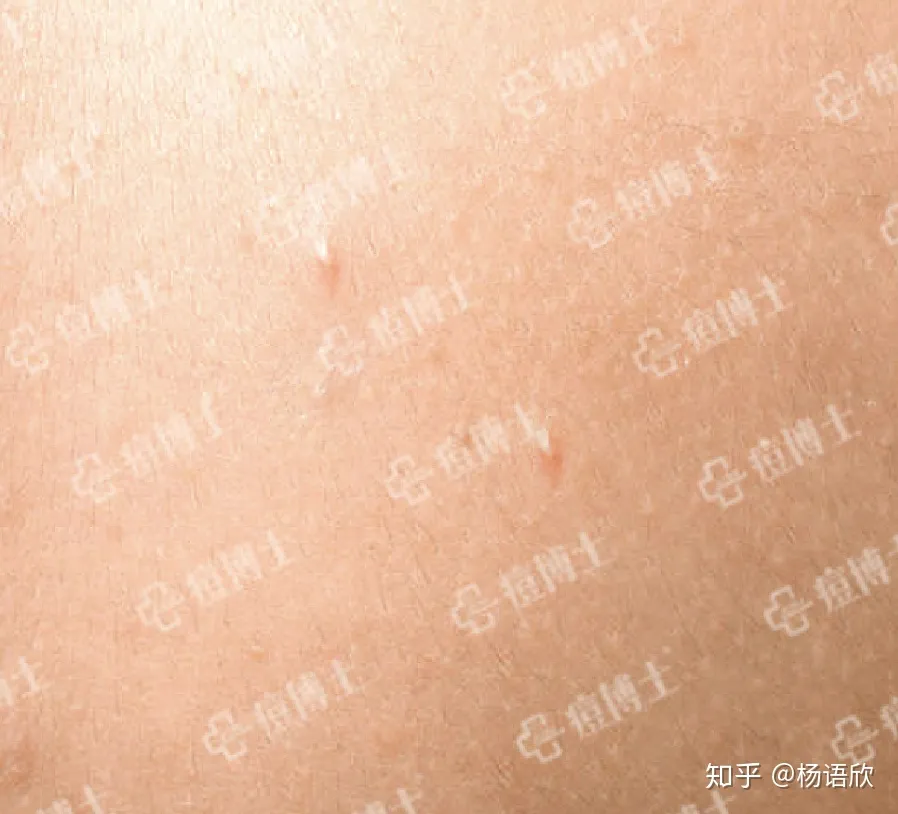

仔细地考察一下皮肤问题的解决
条评论前情提要：
作息饮食和锻炼是正道。仅为应急处理方法
痤疮是一谱系疾病，从微粉刺到广泛瘢痕的聚合性痤疮。
在正常的代谢过程中，毛囊皮脂腺导管上皮细胞脱屑，皮脂腺分泌皮脂，皮脂携带脱屑从毛囊口排出，其中可含有大量的皮肤正常菌群，如痤疮丙酸杆菌、需氧葡萄球菌及马拉色菌等。
痤疮是一种具有损容性的毛囊皮脂腺的慢性炎症性皮肤病。
一、生理性粉刺
1. 微粉刺
微粉刺是全部痤疮损害的基础，肉眼不可见。微粉刺在表皮下继续演变发展成肉眼见的痤疮皮疹大约需8周时间
毛孔内部存在明显的导管角化过度和由此引起的毛囊皮脂腺导管的堵塞，形成微粉刺。
2. 白头粉刺
白头粉刺又称封闭性粉刺(Closed Comedo)，由微粉刺发展而来。外观为皮肤表面出现的白色稍隆起的小疙瘩。皮损为针尖到针头大小灰白色球形小丘疹，类似粟丘疹。肉眼看不到毛囊开口部，只有当皮肤被过度的伸拉时，才可以看到，并可挤压出白色糊状物。
3. 黑头粉刺
黑头粉刺(blackhead)又称开放性粉刺(open come-do)由白头粉刺发展而来，或直接来源于微粉刺。外观为明显扩大的毛孔中的小黑点，略高于皮面或与皮面平行，可挤出乳白色的豆腐渣样的粉刺栓。开始暴露的角栓头小于1mm，随着毛囊口的扩大，暴露越多，一些可达5mm。
二、炎症性痤疮
1. 丘疹性痤疮
丘疹性痤疮(papules)由白头粉刺发展而来。随着白头粉刺扩张，毛囊皮脂腺导管破裂，导致炎性损害的形成，位置较深的粉刺破裂可以形成丘疹。皮肤表面为红色坚实丘疹，一般为米粒到绿豆大小，暗红色，顶端略尖而稍硬的小丘疹，有的丘疹中心可有黑头粉刺或顶端未变黑的皮脂栓。
丘疹是痤疮最基本损害，具有代表性的损害。
丘疹性痤疮 图5-1
丘疹性痤疮病理显示：在毛囊漏斗部闭塞的情况下，形成毛囊皮脂腺内缺氧的环境。厌氧性痤疮丙酸杆菌大量繁殖，分解皮脂，产生化学趋化因子，白细胞聚集而发生炎症性丘疹。
丘疹性痤疮病理示意图 图5-2
2. 脓疱性痤疮
脓疱性痤疮 图6-1
脓疱性痤疮(pustule)由白头粉刺发展而来。 随着白头粉刺的扩张，毛囊皮脂腺导管破裂，导致炎性损害的形成。脓疱多位于丘疹顶端，可以像豌豆大小或更大。如果损害较浅，突出于表皮，几天内脓疱破裂，脓液排出，可见粉刺栓与脓液流到皮面皮肤愈合且没有瘢痕的形成。如果是丘疹性痤疮的继发感染，则脓疱较深，可以引起凹陷性疤痕或瘢痕疙瘩。
脓疱还可以形成几种转归，上皮重新角化过度，炎症后粉刺继续生长，内容物往往排到深层组织，引起广泛而严重的炎症反应。继发的粉刺比原损害大，可以重复破裂形成大的囊肿。
脓疱性痤疮病理显示：在封闭的毛囊皮脂腺结构中大量中性粒细胞被游离脂肪酸和白细胞趋化因子吸引过来，消灭、吞噬痤疮丙酸杆菌，发生剧烈炎症反应，白细胞形成脓细胞，形成脓腔，腔内还可以看到坏死、脱落的毛囊组织。
脓疱性痤疮病理示意图 图6-2
3. 结节性痤疮
结节性痤疮(nodule)由丘疹脓疱性痤疮发展而来。丘疹脓疱性痤疮的炎症继续扩大深入，则于皮下形成大小不等的淡红色、暗红色或紫红色厚壁的结节。通常位于面颊上部的两侧以及关节活动区域的前后。
损害一般位置较深，可高出皮面呈半球形或圆锥形隆起，也可不高出皮面，基底有明显的浸润、潮红，触之有压痛。结节范围较大，一个大的结节可包含几个毛囊和粉刺。直径5～10mm的结节称为小结节，大于1 cm称为大结节，有的结节常达到2～3cm。结节刚开始较坚实，周围很红，以后可变软，表面还可破溃形成出血性痂。此种损害可持续数月，或以后逐渐吸收，或化脓破溃形成瘢痕。
结节性痤疮 图7-1
结节性痤疮病理显示：在脓疱的基础上，毛囊皮脂腺内大量的角质物、皮脂、脓细胞堆积，大量皮脂排不出去，引来大量中性粒细胞，吞噬、消火痤疮丙酸杆菌，炎症较剧烈，部位又较深，使毛囊皮脂腺结构破坏。结节结节多为两个或两个以上毗邻的粉刺破裂融合而成。包含的毛囊、血管、神经和汗腺等结构被完全破坏，损害内可有出血或渗出的血清，并可见残存的毛发和角化物。损害中出现大量的异物巨细胞，以后逐出现早核细胞和组织细胞。
结节性痤疮病理示意图图7-2
4. 囊肿性痤疮
囊肿性痤疮(acne cystica)由结节发展而来，是最轻的聚合性痤疮，皮损主要为大小不等的囊肿，囊肿表现为光滑、圆顶、稍高出皮肤的圆形或是卵圆形结构，质软，挤压时有波动感，直径常为1 cm左右，呈暗红或正常皮色。该皮损常较结节易破裂，破裂后形成出血性痂。囊肿多侵犯患者的背部，会出现于面、颈和项部。以后可以发生很明显的瘢痕，甚至成为瘢痕疙瘩。有时可继发化脓菌感染，破溃后流脓，常经久不愈，可持续5～10年。
囊肿性痤疮 图8-1
囊肿性痤疮病理显示：在结节的基础上，毛囊皮脂腺结构内大量脓细胞的聚集，剧烈的炎症把整个毛囊皮脂腺正常结构破坏掉，形成固态或液态的物质聚积，既有脓液、细菌残体、皮脂和角化物，又有炎症浸润。较深部位的囊腔里的内容物逐渐地向皮肤表面移动，最后穿破皮肤，排出内容物。其排出物所经过的通道形成纤维化的管道，形成瘘管。单纯性囊肿性痤疮往往无化脓或轻微化脓。
囊肿性痤疮病理示意图 图8-2
三、瘢痕
瘢痕分为两种：
（一）萎缩性瘢痕，如冰渣样瘢痕、纤维凹陷性瘢痕、萎缩性斑疹、毛囊性斑状萎缩、毛囊周围弹力纤维变性性瘢痕。
瘢痕 图9-1
萎缩性瘢痕病理显示：表皮层甚至真皮层缺失，胶原组织的萎缩，局部纤维化，弹性纤维消失等。
萎缩性瘢痕病理示意图
图9-2

图9-3
图9-4
（二）增生性瘢痕，如瘢痕疙瘩、软化瘢痕等。
增生性瘢痕
增生性瘢痕病理显示：胶原组织增生。
至此各位应该已经对什么是痤疮以及痤疮的类型有了较为系统的了解，下篇将为各位痘友详细介绍痤疮的病因和影响因素，有兴趣的小伙伴可移步下篇。